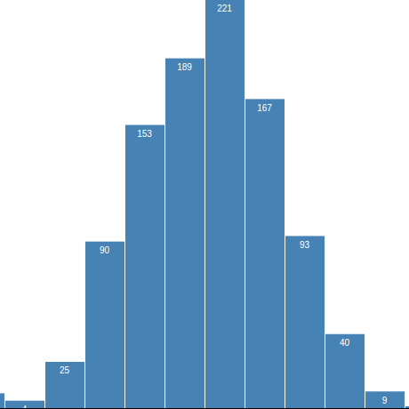

Quem sou eu?
Licenciado em Matemática pela Universidade Estadual do Norte do Paraná (UENP) Campus de Jacarezinho (PR).
Atualmente, é estudante do Curso Superior de Tecnologia em Análise e Desenvolvimento de Sistemas, na Universidade Tecnológica Federal do Paraná, Campus de Cornélio Procópio (PR).
Também é funcionário público na Câmara Municipal de Santo Antônio da Platina, cidade onde vive há seis anos.
Projetos

SmartList
Projeto para a disciplina de Oficina de Integração, da Universidade Tecnologica Federal do Paraná - Campus Cornélio Procópio.
Trata-se de um aplicativo web de listas para supermercados, onde essas empresas teriam um espaço virtual para divulgar os seus produtos e promoções.

Contato